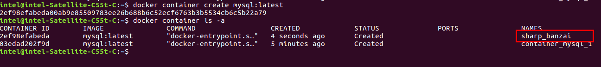
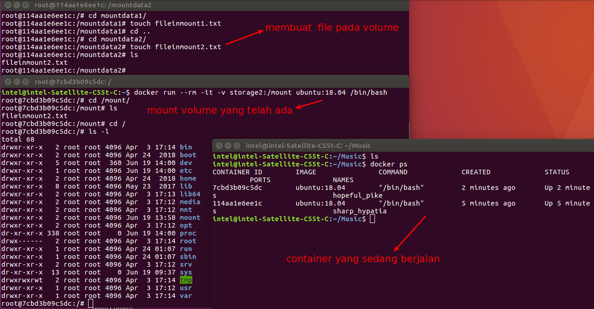
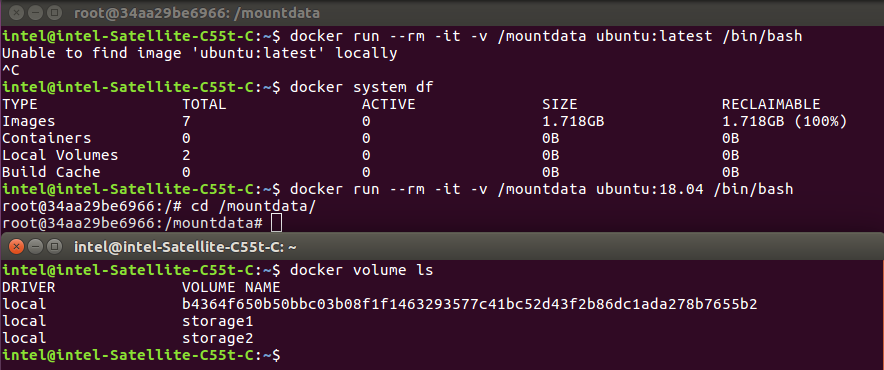

Docker Objects (Image, Container, Volume, Networks)¶
Dalam docker terdapat 4 object utama yang akan digunakan yaitu Image, Container, Volume dan Networks.
Image dan Container¶
Image dan Container pada docker layaknya class dan object, dimana image adalah class dan container adalah object.
Secara lebih dalam dapat diartikan bahwa image adalah satu bundle OS dengan service yang siap dijalankan, sedangkan container adalah implementasi image yang akan di-running dimana jumlahnya bisa lebih dari 1.
Attention
Pada command docker khususnya CONTAINER, banyak command yang telah disingkat dengan tidak memberikan adanya prefix object.
Semisal adalah command seperti docker run dan docker exec, dimana ini sebenarnya masih satu bagian daripada command object container.
docker run adalah singkatan daripada docker container run sedangkan docker exec adalah docker container exec.
Namun untuk object lain seperti image, network, volume tidak banyak command yang disingkat (dengan tidak memberikan prefix object).
Seperti misal dalam menghapus image, network atau volume maka harus memberikan prefix object.
Membuat container dari image¶
Untuk mempermudah pembuatan container maka akan menggunakan image yang sudah terdapat registry hub docker.
Untuk melakukan pulling image dari registry yang sudah ada dapat menggunakan sebagai berikut
command:
docker pull <nama-image-di-registry>:<tag-pada-registry>
Pada case ini akan dilakukan pull image mysql dari registry docker hub
Berikut adalah perintahnya
command:
docker pull mysql
Setelahnya akan terdapat image baru menggunakan command docker images
Dapat dilihat bahwa docker images memiliki keterangan seperti nama repository, tag, image id, created at dan size
Note
Pada proses pulling di registry (docker hub) dapat memberikan tag secara specific, dimana tag tersebut biasanya merepresentasikan version daripada container, misal docker pull mysql:8.0.19
Jika tidak memberikan tag secara specific maka docker akan melakukan pull pada registry dengan tag latest (versi terakhir)
Membuat container daripada image¶
Untuk membuat container pada image dapat menggunakan perintah sebagai berikut
command:
docker container create <image>:<tag>
Misal jika akan membuat container pada image mysql
command:
docker container create --name container-mysql-1 mysql:latest
Warning
Perlu diingat bahwa ketika membuat container daripada suatu image, maka pertama kali docker akan mencari image tersebut di local machine, dan jika tidak diketemukan maka docker akan otomatis melakukan pull dari registry (docker hub)
Hint
Untuk memberikan nama pada sebuah container dapat menggunakan parameter --name.
Jika tidak memberikan nama pada container maka docker akan secara otomatis menamai container tersebut dengan random name, dan biasanya adalah nama orang atau istilah sesuatu (misal sharp_banzai)
Tujuan daripada penamaan container adalah mempermudah dalam manipulasi container itu sendiri (menghapus, run, dll)
Tidak ada aturan untuk convention name pada seluruh objects docker (container, network, volume), kebanyakan nama dipisah menggunakan underscore (_) namun dapat pula menggunakan dash (-)
Warning
Jika akan membuat container dengan nama, maka tidak akan bisa membuat nama container yang sudah ada (harus unique)
Secara default pembuatan container dengan command create tidak akan langsung dijalankan (running).
Jika menggunakan command list container maka container yang baru dibuat diatas tidak akan ada, namun jika menggunakan command list container dengan parameter -a (atau --all) maka container tersebut akan muncul
Untuk melihat daftar container (yang sedang running)
command:
docker container ls
Untuk melihat daftar container (yang tidak running)
command:
docker container ls -a
Ini mengindikasikan bahwa container tersebut masih belum dijalankan
Menjalankan container¶
Menjalankan container (yang mana selanjutnya juga akan disebut sebagai run image) adalah proses menjalankan image yang sudah ada.
command:
docker container start atau docker start
Untuk menjalankan container dapat menggunakan command sebagai berikut
command:
docker container start <nama-container>
misal pada case ini adalah menjalankan container container-mysql-1
command:
docker container start container-mysql-1
Keselanjutnya dapat dilihat dengan command docker container ls
Mengapa container diatas tidak running ???
Ini merupakan behavior daripada container mysql itu sendiri.
Dimana jika tidak memberikan environment yang dibutuhkan maka container tidak akan dapat berjalan.
Environment apa yang perlu diberikan ???
Jika melihat adanya logs daripada container maka akan terdapat keterangan apa saja yang seharusnya diberikan, semisal pada case ini container container-mysql-1 membutuhkan environment berupa MYSQL_ROOT_PASSWORD
Untuk melihat logs daripada container
command:
docker container logs <nama-container>
Misal pada case ini adalah container container-mysql-1
command:
docker container logs container-mysql-1
Dengan adanya logs ini juga akan dapat memberikan keterangan apakah container sudah berjalan atau belum.
Tip
Pada beberapa image lain, biasanya tanpa memberikan environment (yang diharuskan) akan bisa berjalan meski terdapat adanya error
contohnya adalah image mysql/mysql-server
IMAGE
Set environment variable pada container¶
Untuk memberikan environment variable dapat menggunakan parameter -e pada saat pembuatan container (bukan pada saat start container)
command:
docker container create --name <nama-container> -e <ENVIRONMENT_VARIABLE_KEY>=<ENVIRONMENT_VARIABLE_VALUE> <nama-image>:<tag-image>
Misal pada case ini adalah memberikan adanya environment berupa MYSQL_ROOT_PASSWORD
command:
docker container create --name container-mysql-1 -e MYSQL_ROOT_PASSWORD=root mysql:latest
Selanjutnya container tersebut dapat dimulai dengan command start
command:
docker container start container-mysql-1
Expose Port¶
Pada konsep docker, container diharuskan untuk memberikan port agar dapat diakses dari luar (istilahnya adalah expose port)
Untuk memberikan expose port dapat menggunakan parameter -p dan ini diberikan pada saat pembuatan container (tidak bisa saat menjalankan/start container)
command:
docker container create --name <nama-container> -p <port-access-from-outside>:<port-access-from-container> <nama-image>:<tag-image>
Tip
istilah port-access-from-outside dapat disebut sebagai port binding dan istilah port-access-from-container adalah port default dalam mengakses service container.
Biasanya service telah menetapkan adanya default port semisal nginx dengan port 80, mongo dengan port 27017.
Di dalam docker sendiri biasanya port ini sebaiknya tidak perlu diubah.
Misal pada case ini adalah memberikan adanya port yang sama (dari luar maupun dari dalam container)
docker container create –name container-mysql-1 -p 3306:3306 -e MYSQL_ROOT_PASSWORD=root mysql:latest
Artinya container container-mysql-1 akan dapat diakses dari luar (public atau local machine) yaitu 3306, dimana nantinya pada container tersebut akan mem-forward (dari 3306) ke port 3306
Atau istilah mudahnya adalah saat local machine mengakses port 3306 maka docker daemon akan memilih container yang mengakses pada port tersebut, kemudian di container dia akan mengakses ke port 3306
Hint
Jika ingin menggunakan adanya lebih dari 1 container pada image yang sama, semisal mysql server 2, maka hanya perlu memberikan port-from-outside (port binding) yang berbeda, misal 3307
docker container create –name container-mysql-2 -p 3307:3306 -e MYSQL_ROOT_PASSWORD=root mysql:latest
Caption
Docker run¶
docker run adalah perintah (command) yang equivalent dengan perintah docker container create + docker container start
Perintah docker run sendiri merupakan singkatan daripada perintah docker container run
Namun dalam perintah docker run memiliki lebih banyak fitur dari parameternya, salah satu yang biasa digunakan adalah parameter –rm yang akan menghapus container ketika container berhenti.
Docker exec¶
docker exec adalah perintah (command) untuk menjalankan suatu command pada container yang berjalan (active).
Perintah docker exec sendiri merupakan singkatan daripada perintah docker container exec.
Docker exec sering digunakan untuk masuk ke dalam container dengan interactive mode dan tty(pseudo terminal).
command:
docker exec -it <nama-container> /bin/bash
atau
docker exec -it <nama-container> /bin/sh
Warning
Terminal yang biasa digunakan adalah bash, namun perlu diketahui bahwa tidak setiap container memiliki bash
Volume¶
Objects Volume pada docker layaknya storage disk yang dapat di-attach (ditambatkan) pada suatu container.
Substansial penggunaan volume pada docker adalah dikarenakan konsep container pada docker yang stateless atau tidak menyimpan data.
Dalam arti lain jika semisal container dihapus maka datanya juga akan ikut terhapus.
Untuk service seperti nginx, apache, dan php tentu tidak akan menjadi masalah karena application tersebut tidak menyimpan data dinamis.
Lantas bagaimana dengan service yang berhubungan dengan data dinamis seperti database (misal MySQL) ?
Tentu service tersebut harus bersifat statefull atau menyimpan data.
Secara garis besar dalam docker terdapat 2 jenis metode penggunaan volume yaitu:
volume objects
bind mount
Seperti pada gambar diatas maka Volume objects berada pada docker area.
Namun sejatinya saat membuat volume objects maka akan disimpan sebagai directory pada /var/lib/docker
Hint
Untuk lebih mempermudah maka dalam dokumentasi volume ini akan menggunakan istilah sebagai berikut:
mount point atau mount source
Adalah path daripada volume objects atau bind mount yang akan di mounting ke mount destination
mount destination
Adalah path tujuan dari mount point volume objects atau bind mount yang berada di container
Sedangkan jika menggunakan metode bind mount maka mount point atau mount source berasal filesystem host (direktori pada host machine),
Berbeda dengan bind mount, Volume objects akan dapat di manage lebih mudah karena memiliki API docker (melalui command docker volume).
Selain itu fitur Volume objects juga lebih banyak daripada bind mount.
Baik metode volume objects atau bind mount, konsepnya hampir sama yaitu melakukan mounting file/folder ke dalam container.
Attention
Konsep mounting pada docker object adalah membuat mount point ke suatu directory di container.
Artinya ini bisa untuk directory root atau directory yang telah ada pada container.
Berbeda dengan konsep storage di vps/cloud yang pada umumnya membuatkan mount destination pada directory /mnt/<nama-volume>.
Penggunaan volume objects¶
Untuk membuat volume object dapat dengan cara berikut
command:
docker volume create <nama-volume-object>
Misalkan membuat volume bernama storage1 yang selanjutnya di attach (mounting) ke dalam container
Untuk melakukan mounting dengan menambahkan parameter -v pada command docker run.
Pada gambar diatas, dibuatkan file di tiap volume.
Kemudian selanjutnya membuat container baru yang me-attach (mounting) volume yang sama
Warning
Sebenarnya dapat pula membuat volume object tanpa harus memberikan nama
Namun ini kurang direkomendasikan karena docker akan secara default membuat random id pada nama volume sehingga akan susah untuk mengenalinya
Penggunaan bind mount¶
Metode bind mount hampir sama dengan volume object hanya saja dalam bind mount akan menggunakan directory yang berada di filesystem host.
Caption
Note
Apabila menggunakan metode bind mount, maka ketika membuat file dari container dimana current-user yang berjalan adalah root maka secara default file tersebut juga akan memiliki owner root.
Konsep user yang berjalan di container sejatinya sama dengan user di host machine.
Hanya saja penggunaannya melalui uid (user id) dan bukan nama user.
Artinya jika uid antara host machine dengan container sama, maka ketika membuat file daripada container akan memiliki owner yang sama dengan host machine.
Caption
Warning
Apabila saat mendeklarasikan mount point tidak menggunakan prefix / maka mount point tersebut akan dikenali sebagai volume object.
Dan jika saat mendeklarasikan mount point menggunakan prefix / maka mount point tersebut adalah directory filesystem dari host machine
Selain itu jangan menambahkan adanya suffix / pada file atau folder daripada mount point, karena akan terjadi error.
Nantinya docker akan secara otomatis mengenali apakah mount point tersebut file atau directory saat mounting di container.
Note
Selain menggunakan command docker run, untuk me-attach (mounting) baik dari metode volume object atau bind mount dapat menggunakan command docker container create atau docker create
command:
docker container create -v <nama-volume-object>:<mount-point-container> <nama-image>:<tag-image>
docker container create -v /<mount-point-local-machine>:<mount-point-container> <nama-image>:<tag-image>
substansial penggunaan volume objects atau bind mount¶
Dengan adanya behavior yang berbeda daripada metode volume object dan bind mount maka penggunaan yang ideal adalah sebagai berikut.
volume object¶
Jika semisal datanya tidak diperlukan untuk diedit secara manual, maka sebaiknya gunakan volume object
Contoh sederhana adalah data pada MySQL.
Database MySQL akan menyimpan data data seperti database dan data dinamis lainnya di directory /var/lib/mysql.
Data data didalamnya adalah hasil proses daripada software MySQL, oleh karenanya sebaiknya data tersebut tidak diubah ubah secara manual.
Sebenarnya bisa saja menggunakan metode bind mount akan tetapi nantinya file atau direktori akan berada di filesystem dan rentan terhadap kehilangan beberapa data tersebut.
Bind Mount¶
Jika semisal datanya diperlukan untuk diubah (edit) secara manual, maka sebaiknya gunakan bind mount.
Contoh sederhana adalah file/folder suatu project.
Semisal pada framework Laravel yang berisikan file/folder yang nantinya perlu diedit.
Tentunya tidak mungkin apabila file project disimpan ke dalam volume object, karena file dan folder tidak akan terdapat pada filesystem host
Backup dan Restore¶
Jika akan membuat backup/restore maka penulis lebih menyarankan untuk menggunakan metode volume object
Jika menggunakan konsep bind mount maka semua file/folder (yang sebelumnya di mounting ke dalam container) terdapat pada filesystem host.
Artinya tidak dalam bentuk 1 file backup yang siap untuk di restore.
Sedangkan konsep backup/restore itu sendiri sebaiknya menggunakan 1 file yang merepresentasikan semua data, bisa dalam bentuk compressed (tar atau zip) atau data lain yang berbentuk satu bundle.
Dalam melakukan backup, sebelumnya perlu ditelaah data apa yang akan dibackup, dalam hal ini ada 2 metode yaitu file/folder atau stream output
Backup file/folder
Apabila data yang dibackup berbentuk file/folder maka akan dibuatkan file compressed (tar atau zip).
Stream Output text
Apabila data yang dibackup adalah content daripada suatu application/file maka data backup akan dibuatkan streaming output text, atau dalam arti lain data tersebut akan dibaca melalui suatu application dan ditaruh ke dalam satu file.
Contoh pada bagian ini adalah data pada MySQL yang mana untuk membackup data di databasenya diperlukan package
mysqldump
Backup/Restore file/folder¶
Jika dalam suatu volume terdapat file/folder, maka untuk backup data tersebut adalah dengan membuat file compressed, dalam case ini akan dibuatkan file tar.
Berikut contoh sederhana dalam membuat backup file/folder pada suatu volume
membuat container dimana memiliki mount point ke /dbdata
buat container tanpa source volume (host/volume default docker) command:
docker run -it -v /dbdata --name dbstore ubuntu:18.04 /bin/bash
lalu bisa isi file sembarang di directory ‘/dbdata’
backup semua file di directory ‘/dbdata’ sebelumnya cek dulu apakah volume dari suatu container sudah tertambatkan (attach) dengan param ‘–volumes-from <container>’ command:
docker run -it --rm --volumes-from dbstore ubuntu:18.04 /bin/bash
Jika sudah tertambatkan (attach) maka compress semua file (dengan tar) command:
docker run --rm --volumes-from dbstore -v $(pwd):/backup ubuntu:18.04 tar cvf /backup/backup.tar /dbdata
setelahnya di current local directory akan terdapat file
buat container lain yang akan me-restore file backup
docker run -it -v /dbdata –name dbstore2 ubuntu:18.04 /bin/bash
4. docker run –rm –volumes-from dbstore2 -v $(pwd):/backup ubuntu:18.04 bash -c “cd /dbdata && tar xvf /backup/backup.tar –strip 1”
backup¶
buat 1 container dengan nama container_a dan attach volume yang akan dibackup
command: docker run -it -v storage1:/data1 -v storage2:/data2 –name container_a ubuntu:18.04 /bin/bash
edit file di dalamnya (buat juga direktori)
buat container temp (–rm) dengan volume dari container_a dan mount current directory $(pwd)
command: docker run –rm -it –volumes-from container_a -v $(pwd):/backup ubuntu:18.04
letakkan file backup
command: tar cvf /backup/backupvol1.tar /data1 tar cvf /backup/backupvol2.tar /data2
restore¶
buat 1 container dengan nama container_b dan attach 2 volume yang akan me-restore
command: docker run -it -v restore1:/data1 -v restore2:/data2 –name container_b ubuntu:18.04 /bin/bash
buat container temp (–rm) dengan volume dari container_b dan mount current directory $(pwd)
command: docker run –rm -it –volumes-from container_b -v $(pwd):/backup ubuntu:18.04 /bin/bash
extract file backup ke masing masing volume
command: cd /data1 && tar xvf /backup/backupvol1.tar –strip 1 cd /data2 && tar xvf /backup/backupvol2.tar –strip 1”
parameter --volumes-from adalah me-mounting semua volume yang sedang di-mounting dari suatu container.
Parameter ini digunakan untuk mempermudah mounting agar tak perlu memberikan mount point atau mount destination yang sama pada suatu container
Hint
Apabila akan me-mounting volume yang sama pada suatu container dengan cara manual maka akan cukup merepotkan, seperti
command:
docker run -it --rm -v vol1:/hoho -v vol2:/hoho ubuntu:18.04 /bin/bash
Update
ada cara yang lebih baik dengan cara buat container temp dan mount volume kemudian letaakan pada file tentu ini bisa dibuat bash shell/script dan tentu ini bisa untuk restore juga
Backup stream output¶
Dalam database MySQL semua database/schema akan disimpan ke dalam directory /var/lib/mysql.
Di dalam directory tersebut selain database/schema juga terdapat file konfigurasi seperti .pem.
Untuk bisa membuat file backup data MySQL membutuhkan package mysqldump yang akan melakukan streaming output text.
Nantinya dari streaming output text tersebut dapat langsung disimpan ke dalam file di filesystem host.
backup docker exec some-mysql sh -c ‘exec mysqldump –all-databases -uroot -p”$MYSQL_ROOT_PASSWORD”’ > /some/path/on/your/host/all-databases.sql
restore docker exec -i some-mysql sh -c ‘exec mysql -uroot -p”$MYSQL_ROOT_PASSWORD”’ < /some/path/on/your/host/all-databases.sql
Hint
Pada software MySQL sebenarnya bisa saja mem-backup semua data pada directory /var/lib/mysql, namun kurang disarankan, karena terdapat berbagai file konfigurasi seperti .pem file.
Warning
Sejatinya konsep mounting pada UNIX Like adalah membuat disk baru, layaknya windows yang akan menamai drive G,``H``,``I`` dan seterusnya saat memasang Disk Drive.
Namun konsep mounting pada docker cukup berbeda.
Secara default disk yang terlihat hanyalah satu (/dev/sdb3) yang mana mounted destination defaultnya adalah /etc/hosts
Meskipun me-mounting lebih dari 1 volume (volume object atau bind mount) maka hasil daripada disk hanyalah satu (/dev/sdb3).
Selain itu terdapat pula keanehan di bagian mount destination.
Apabila mount destionation nya tidak berada pada default filesystem container maka mount destionation nya adalah mount destination itu sendiri.
Namun jika mount destionation nya berada pada default filesystem container maka mount destionation nya adalah /etc/hosts
kalau lebih dari 1 volume misal di docker-compose:
volumes:
- "./config/my.conf:/etc/mysql/conf.d/config-file.cnf"
- "./data:/var/lib/mysql:rw"
- "./directoryhost:/mountdestination1"
- "volumeobject:/mountdestination2"
maka disk yang terlihat (dengan command df) adalah:
root@d0e48cefdd53:/# df -h
Filesystem Size Used Avail Use% Mounted on
overlay 32G 27G 3.9G 88% /
tmpfs 64M 0 64M 0% /dev
tmpfs 3.9G 0 3.9G 0% /sys/fs/cgroup
shm 64M 0 64M 0% /dev/shm
/dev/sdb3 32G 27G 3.9G 88% /etc/mountdestination1
tmpfs 3.9G 0 3.9G 0% /proc/asound
tmpfs 3.9G 0 3.9G 0% /proc/acpi
tmpfs 3.9G 0 3.9G 0% /proc/scsi
tmpfs 3.9G 0 3.9G 0% /sys/firmware
Penulis tidak akan menanggapi keanehan ini, namun hanya untuk sekedar memberitahukan.
Docker network¶
Network pada docker berfungsi untuk mengkoneksikan antar container.
Sejatinya container pada docker bersifat isolated dimana container satu dengan yang lain tidak memiliki adanya kemampuan untuk berinteraksi.
Maka untuk dapat saling berkomunikasi maka dibutuhkan adanya network.
Berikut adalah implementasi sederhana dalam penggunaan aplikasi laravel.
Laravel sendiri adalah framework php yang biasa dijalankan menggunakan server nginx dan database mysql.
Konsep untuk bisa mengkoneksikan cukup sederhana, yaitu pertama buat network, kemudian tiap container masukkan ke dalam network.
Kemudian jika semisal suatu container akan berhubungan dengan container maka dapat dengan memberikan host berupa nama container
konsepnya sederhana
yaitu build image dari php, install composer ada command composer install
jadi dari image tersebut akan dijadikan php (dengan composer)
jadi sebenarnya docker daemon ini adalah os pada suatu image
misal php dengan tag cent os
maka dia docker daemonnya dalah cent os
docker container create –name java-docker -p 8080:8080 -e NAME=docker -e MONGO_HOST=mongo -e MONGO_PORT=27017 -e REDIS_HOST=redis REDIS_PORT=6379 java-docker:1.0
atau dengan kata lain sebenarnya application java di running dengan menggunakan host mongo dan host redis untuk bisa menggunakan database
untuk menjalankan java-docker diatas yang menggunakan mongo dan redis sebagai database, maka yang di run adalah image java-docker
docker container start java-docker
namun ini masih belum bisa dijalankan
karena java-docker tidak mengetahui host mongo
yang artinya
saat membuat container itu sebenarnya terisolasi satu sama lain
jadi container satu dengan yang lain tidak bisa berkomunikasi satu sama lain
untuk dibutuhkan adanya network
jadi buat 1 network lalu container yang akan dikomunikasikan harus dimasukkan ke dalam network tersebut
docker network create java_network
untuk melihat list
docker network ls
docker network connect java_network mongo
docker network connect java_network redis
docker network connect java_network java-docker
docker container inspect mongo
di bagian network terdapat adanya network (java_network)
Docker logs¶
Interactive mode dan TTY (pseudo terminal)¶
Dalam komunikasi dengan suatu program di komputer, untuk bisa mendapatkan adanya output daripada command maka dibutuhkan adanya standard streams (STDIN, STDOUT, STDERR)
Ketika menjalankan command daripada service (seperti nginx, php, dll) tentunya dibutukan adanya hasil daripada command tersebut.
Pada docker secara default standard streams ini telah dijalankan.
Artinya setelah menjalankan container, maka akan muncul output daripada command yang sedang berjalan (log, error atau keterangan lain).
Namun jika semisal ingin menghilangkan fitur tersebut maka container dapat dijalankan melakui detached mode (-d).
Sedangkan tty (pseudo) sendiri adalah untuk bisa menghubungkan user dengan suatu komunikasi baru (terminal baru).
Secara singkat maka kombinasi antara interactive dan tty adalah masuk ke dalam bash (terminal session) yang mana akan memunculkan adanya standard streams (STDIN, STDOUT dan STDERR)
ref : https://medium.com/@lucaspenzeymoog/understanding-standard-streams-stdin-stdout-5bc350939b94
Note
Untuk memudahkan dalam pengimplementasian docker, maka pada kali ini akan menggunakan case php application, dimana pada application tersebut akan menggunakan service nginx, mysql, dan php.
Dalam UNIX Like terdapat file yang digunakan untuk meng-handle Standard Input, Standard Output dan Standard Error pada suatu service yang berjalan
File tersebut berada di path /dev, yaitu /dev/stdin untuk standard input, /dev/stdout untuk standard output, dan /dev/stderr untuk standard error.
Dalam docker sendiri
namun lantas kenapa gak bisa dibaca pas di container kenapa kalau service kayak nginx diinstall di local bisa dibaca
nah jadi gini kalau nginx yang diinstall di local itu file /var/log/nginx/access.log gak akan di forward (symlink)
makanya kalau pake docker ya harus di symlink ke /dev/stdout
kenapa biar kelihatan bro kalau di docker logs <container-name>
nah inilah yang keluar (kayak knosep foreground) kan
tapi wait kalau lebih dari satu host gimana nah jadi gini dari file nginx configuration (sites-available) dia kan ada access log disitu diset kan ya nah nanti tiap service nginx akan dibaca disitu
so bakal dibuat itu filenya
nah masalahnya di docker kan gak sampe kek gitu nah di dockerfile lebih parah lagi, gak ada
makanya saranku 1 service nginx itu default aja, jadi tetep baca /var/log/nginx/access.log
takutnya kalau gak di symlink kan gak kebaca lognya bahaya kan
atau gini aja boleh 1 service nginx lebih dari 1 conf, tapi semuanya menuju file yang sama /var/log/access.log yang nanti di symlink makanya bakal aman bos tapi ya gitu bakal kebaca semuanya, susah juga kan buat monitoring
artinya secara default command docker logs <container> adalah membaca pada /dev/stdout
ketika menjalankan nginx jangan menggunakan -it /bin/bash karena itu gak akan jalan, idk tapi menurutku karena masalah stdin stdout stderr artinya docker ini gak bis
wait salah bro bukan logs
You have run the container in order the CMD command starts, if not, you are overwriting the init process with the bash command. Once it starts you can open a connection into the container and check:
tapi masalah karena ini replace di bagian docker run (exec cms/entrypoint)
nah kalau di nginx itu kan sebenere dia nulis default di /dev/stderr
biasanya sih di file conf itu ada bagian access_log dan errror_log nah kalau misal gak dikasih berarti di Dockerfile harus dikasih symlink
nah jadi gini kalau semisal pake konsep /dev.stderr symlink di satu Dockerfile itu berarti satu service docekr itu nyimpan di situ lantas gimana kalau ada 2 conf kan bisa aja itu ada 2 hosts kan, apa gak berarti ada 2 conf artinya log nya gimmana ? ya berarti harus dibuat which mean pake aja access_log dan error_log di conf ok challenge gimana kalau punya 2 conf apa bisa membuat 2 log
masalah env file pada docker-compose
jadi katakanlah di laravel kan file .env itu cwd (current working directory) sama docker-compose.yml nah ada cara yaitu meletakkan di direktori lain buat ngecek apakah sudah benar pake direktori lain atau file .env di cwd bisa pake docker-compose config
ref : https://docs.docker.com/compose/environment-variables/